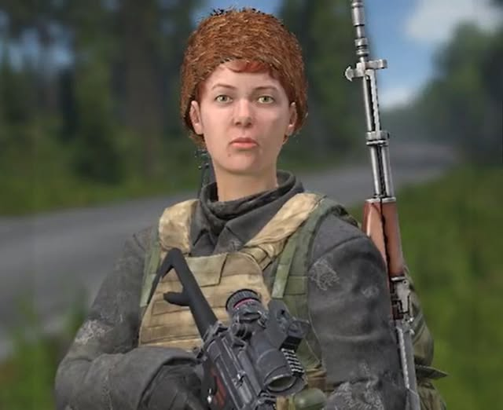

Kim jestem? Jan Tundra?
Fan DayZ, survivalu i dobrej zabawy. Na kanale znajdziesz PvP, loot, przygody,
dziwne decyzje, podejrzane sojusze i sytuacje, których nie da się logicznie wytłumaczyć.
Raz jest spokojna wyprawa po konserwę, a raz pełna operacja wojskowa zakończona paniką,
krzykiem i ucieczką przez las.
Tutaj nie zawsze chodzi o wygraną. Czasem chodzi o to, żeby przeżyć jeszcze pięć minut,
znaleźć kolegę, nie zgubić butów i nie zostać bohaterem mema.
DayZ
PvP
Survival
Loot
Teamplay
Fasolka
M4 marzeń
Panika premium
Świeżak z łopatą

Największy koszmar Jana 😂
✔️ 3 godziny szukania M4
✔️ 5 minut szukania kolegi
✔️ 20 minut przekonywania, że „mam plan”
✔️ 1 konserwa znaleziona po ciężkiej walce
❌ Ginie od świeżaka z łopatą.
„Nie gram dla statystyk...
ale jak znajdę fasolkę, to jej nie oddam.”
„W DayZ są dwa typy ludzi:
ci, którzy mają loot,
i Jan, który właśnie słyszy kroki za plecami.”
Co znajdziesz na kanale?
PvP bez gwarancji sukcesu
Czasem precyzyjna akcja, czasem strzał w panice, a czasem pytanie:
„Kto do mnie strzela i dlaczego to mój kolega?”
Lootowanie wszystkiego
Jeśli da się to podnieść, Jan to sprawdzi. Nawet jeśli to zgniły owoc,
jedna skarpeta albo puszka, której nikt nie chciał.
Taktyczne odwroty
To nie jest ucieczka. To strategiczne przegrupowanie z prędkością światła,
najczęściej w stronę najbliższego drzewa.
Ekipa i chaos
Wspólne granie, śmiech, zgubieni znajomi i klasyczne:
„Gdzie jesteś?” — „No tutaj.” — „Czyli gdzie?”
Ostrzeżenie przed oglądaniem
Oglądanie Jana Tundry może powodować:
✔️ nagłe zainteresowanie fasolką w puszce,
✔️ podejrzliwość wobec każdego krzaka,
✔️ przekonanie, że łopata to broń masowego rażenia,
✔️ chęć krzyczenia „TO NIE JA STRZELAŁEM!”, nawet gdy nikt nie pytał,
✔️ śmiech w najmniej odpowiednich momentach.
Zasady przetrwania według Jana
1. Jeśli słyszysz kroki — to pewnie problem.
2. Jeśli nie słyszysz kroków — problem właśnie się skrada.
3. Nie ufaj świeżakom. Szczególnie tym z łopatą.
4. Fasolka jest ważniejsza niż honor.
5. Nigdy nie mów „jest czysto”, bo gra potraktuje to jak zaproszenie do katastrofy.
6. Kolega zawsze mówi, że jest „obok”, ale nigdy nie wiadomo obok czego.
7. Najlepszy plan to taki, który brzmi dobrze przez pierwsze trzy sekundy.
Kiedy wbić?
Streamy i materiały pojawiają się wtedy, gdy Jan przeżyje wystarczająco długo,
żeby kliknąć przycisk „start”. Najczęściej możesz spodziewać się:
Live na Twitchu
Luźne granie, akcje na żywo i momenty, których nie da się wyciąć w montażu.
Filmy na YouTube
Najlepsze akcje, śmieszne sytuacje, skróty i dowody na to,
że czasem naprawdę „prawie się udało”.
Kick
Alternatywne miejsce spotkań, gdy trzeba odpalić zapasową bazę operacyjną.
Legendarne teksty Jana
„Spokojnie, mam sytuację pod kontrolą.”
— Jan, 2 sekundy przed utratą całego lootu
„To chyba był mój kolega... albo wróg... dobra, już nieważne.”
„Ja tylko sprawdzę ten domek i wracam.”
— ostatnie znane słowa przed 40-minutową wyprawą
Społeczność
Dołącz na Twitchu, YouTube, Kicku i Discordzie, aby wspólnie pograć,
pośmiać się z kolejnych przygód w DayZ i zobaczyć, jak Jan mówi:
„Spokojnie, mam sytuację pod kontrolą” — chwilę przed totalną katastrofą.
A jeśli chcesz wesprzeć wyprawę po konserwy, bandaże i legendarną M4,
możesz postawić kawę. Jan obiecuje, że nie wyda wszystkiego na amunicję,
której potem i tak zapomni przeładować.
Misja kanału
Misja jest prosta: zebrać ekipę, wejść do świata DayZ, znaleźć loot,
przeżyć jak najdłużej i zrobić z tego dobrą zabawę. Nie zawsze będzie profesjonalnie,
nie zawsze będzie spokojnie, ale będzie swojsko, śmiesznie i po tundrowemu.
Bo w świecie Jana Tundry nawet zwykła wyprawa po wodę może skończyć się
epicką historią, zdradą przez drzwi, pościgiem przez las i dramatycznym:
„Kto zabrał moje buty?”.